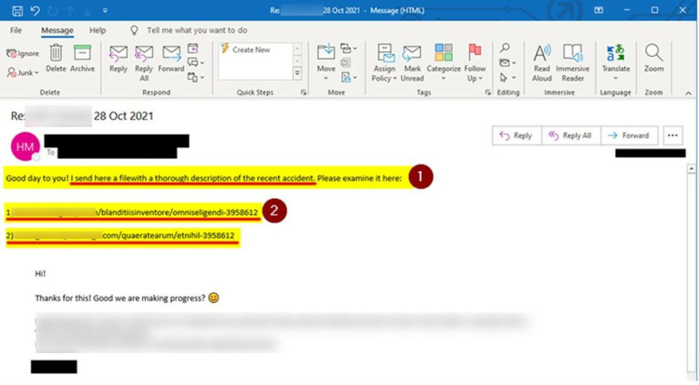

FLUBOT SMS-EK MIATT ADTAK KI RIASZTÁST FINNORSZÁGBAN
Flubot vírussal fertőző SMS-ek tömeges terjedésére figyelmezetet a finn nemzeti kiberközpont (NCSC-FI), 24 óra alatt minetgy 70 000 vírusos linket tartalmazó SMS-t azonosítottak.
Forrás
KIBERTÁMADÁS ALATT AZ IKEA
Az IKEA alkalmazottak közötti belső kommunikációt nehezíti az áruházláncot érintő, és jelenleg is folyamatban lévő kibertámadás, amelynek során a támadók egy egyszerű, de rendkívül veszélyes adathalász technikát alkalmaznak. A támadók a közelmúltban a ProxyShell és ProxyLogin sérülékenységek kihasználásával sikeresen feltörtek IKEA-s belső Exchange levelezőszervereket, és a belső hálózaton küldött, valódi e-mailek felhasználásával káros hivatkozást tartalmazó üzeneteket terjesztenek a dolgozók között. A módszer azért kiemelten veszélyes, mivel az áldozat egy folyamatban lévő levelezés részeként kevésbé számít káros tartalomra. Tovább ront a helyzeten, hogy amíg az e-mail szűrők képesek azonosítani és karanténba helyezni néhány ilyen rosszindulatú e-mailt, az alkalmazottak nagyobb valószínűséggel állítják vissza azokat, azt gondolva, hogy az e-mail tévedésből került karanténba. A BleepingComputer információi szerint az IKEA IT csapat arra kérte az alkalmazottakat, hogy fokozott óvatossággal levelezzenek, lehetőség szerint ne nyissák meg az e-maileket, és különösen az e-mailekben szereplő hivatkozásokat vagy csatolmányokat, függetlenül attól, hogy kitől érkezett az e-mail. 